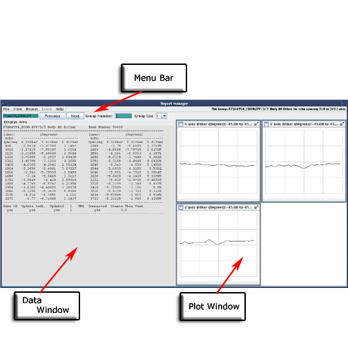
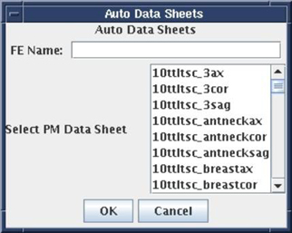
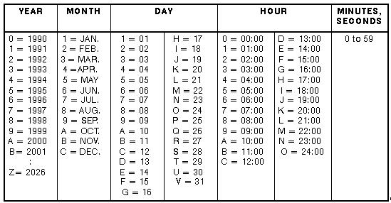
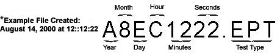

- 00000018WIA30A94E20GYZ
- id_131061593.2
- Jul 25, 2025 5:15:38 PM
Report Manager Tool
Description
The Report Manager tool is used to view MR test result data files (“T-tests”) on the host computer.
Tool Start-Up
To open the Report Manager tool, follow the steps shown in the illustration below.

When prompted for your password, type mrgo1 and press Enter.
It is possible that the customer changed the default password. If you cannot log in, contact the customer for the correct password.
Main Menu
When the Report Manager tool starts, the main menu opens. The window is divided into three tiled parts: the menu bar, the data window and the plot window.
-
The menu bar, at the top, lets you select different data manipulation and display options. The five menu options are File, View, Report, Trend, and Help. Each option has its own pull-down sub-menu featuring related tasks.
-
The data window, which provides data visualization, trend analysis and an auto-data sheet generator, has the capability to scroll both in vertical and horizontal directions.
-
The plot windows can show up to four plots per group (also called page).

File Menu
The File menu has a pull-down sub-menu. The available options are: Open, Print, and Quit.

Open
Select Open to launch a window showing the list of available test files. The default directory name is shown along with the test file names residing in that directory (/usr/g/service/data on the host computer). Select a file to highlight the file name and click OK to display the contents of the file in the data window.
You can view a list of files by selecting the file type from the File Type drop-down menu. The data directory can be changed from the default by typing a different directory name.
You can also open the window by pressing Ctrl + O.

This option prints a particular report file or the active screen to the default media. The media can be a printer or a postscript file. This application uses the system’s default printer.

Quit
Select Quit and click Yes to confirm the option when the Really Quit confirmation dialog box opens. You can also select this option by pressing Ctrl + Q.
View Menu
The test files usually consist of several groups. A group consists of data and may contain one or more plots. The View menu lets you navigate between different data sets and plots. Use the Next and Previous buttons to navigate within the selected test file. The application shows all the valid group numbers for the selected test file. By default, the group numbering starts at zero. You can also navigate between data sets using the Group List drop-down menu.
Report Menu
This option is used to generate two types of reports: and . The “T-test” data sheets can be generated automatically.
PM Data Sheets
This option automatically fills in a PM data sheet from a “T-test” data file (see PM Data Sheet Menu). Select a PM data sheet name, provide your name, and the tool automatically fills the blanks and shows the data in the data display area.
For example, to choose the 1.0T SST Head data sheet, select 10tSSTh. See PM Data Sheet Example for an example data (1.5T) sheet. The PM data sheets can also be generated by pressing Ctrl + A. PM data file names are shown in 1.5T Data File Names .


| FILENAME | DESCRIPTION |
| 15rfth_by | 1.5T RFT - Head |
| 15rfth_en | 1.5T RFT - Head |
| 15rftb_by | 1.5T RFT - Body |
| 15rftb_en | 1.5T RFT - Body |
| 15SSTb | 1.5T SST - Body |
| 15SSTh | 1.5T SST - Head |
Group Report
The group report lets you report all the groups in the test file at one time, or specify which groups to show. You can specify your name and select the groups that need to be included in the report. The group report appears in the data display area. This option can also be selected by pressing Ctrl + G.
File Naming Conventions Used for Reports
The following illustration shows the file naming convention used for reports and an explanation of data file identifications.


Trend
The trend option is not implemented at this time.
Help Menu
The help menu provides information about the Report Manager and its functions.